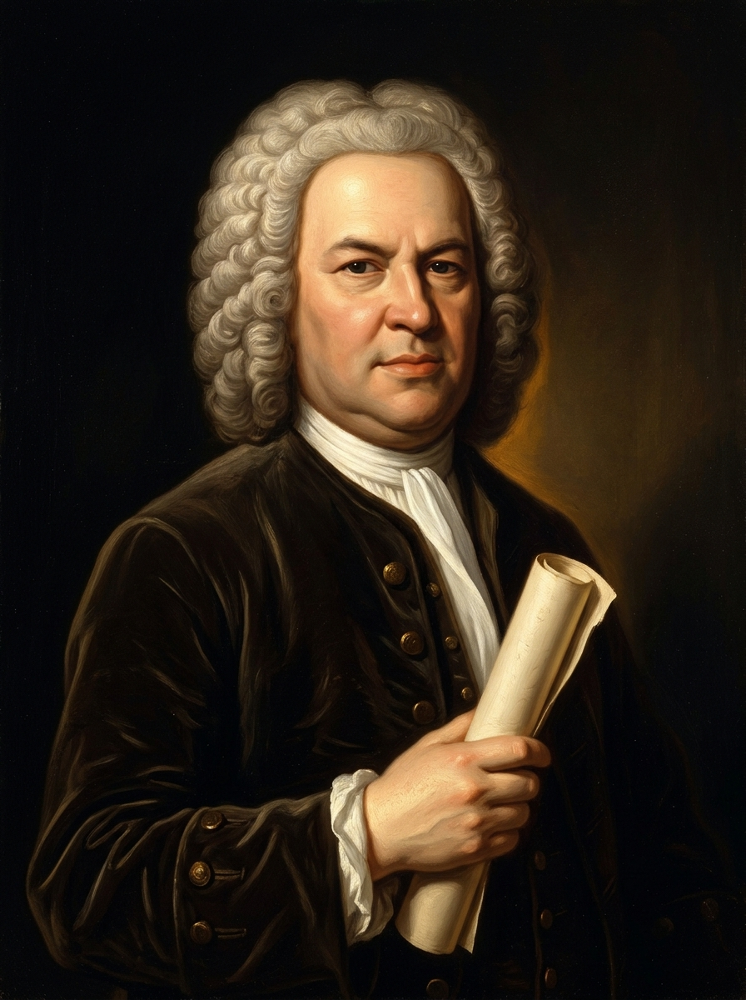

Johann Sebastian Bach es el arquitecto definitivo de la civilización musical occidental. En su mente, la proporción matemática pitagórica, la ingeniería del contrapunto y la fe espiritual más sincera se fundieron en una sola catedral sonora. Llevó todas las formas de su época (fugas, corales, pasiones, conciertos) a una cima tan insuperable que su muerte en 1750 marca simbólicamente el fin de la era Barroca.
Bach apenas publicó un puñado de obras en vida y jamás empleó números de Opus. Tras su redescubrimiento en el siglo XIX, el musicólogo alemán Wolfgang Schmieder publicó en 1950 el BWV (Bach-Werke-Verzeichnis: 'Catálogo de Obras de Bach'). A diferencia de los catálogos cronológicos, el BWV está ordenado temáticamente por géneros musicales en más de 1,100 obras:
Contexto Vital: Organista y músico de corte del Duque Guillermo Ernesto de Sajonia-Weimar. Descubre las partituras italianas de Vivaldi y las copia a mano nota por nota.
Contexto Vital: Maestro de capilla para el príncipe Leopold de Anhalt-Cöthen, un apasionado melómano calvinista que no requería música sacra. Bach compone música de cámara pura.
Contexto Vital: Director musical de las iglesias de Leipzig. Escribe una cantata sacra semanal para cada domingo del año litúrgico y en sus últimos años se sumerge en el contrapunto abstracto puro.
Clasificación temática de las obras cumbres con número BWV, instrumentación y aporte musicológico:
| Catálogo | Título de la Obra | Año | Aporte & Significado Conceptual |
|---|---|---|---|
| BWV 846–869 | El Clave Bien Temperado (Libro I) | 1722 | 24 Preludios y Fugas que recorren todas las tonalidades mayores y menores demostrando la viabilidad de la afinación temperada. |
| BWV 870–893 | El Clave Bien Temperado (Libro II) | 1742 | Segunda serie de 24 preludios y fugas con una sofisticación armónica y madurez contrapuntística aún más profunda. |
| BWV 988 | Variaciones Goldberg | 1741 | Un Aria y 30 variaciones construidas sobre la línea del bajo continuo; cada tres variaciones introduce un canon a un intervalo superior sucesivo. |
| BWV 971 | Concierto Italiano | 1735 | Simula el diálogo orquestal entre solo y tutti en un clavecín de dos teclados sin necesidad de orquesta. |
| BWV 772–801 | Invenciones y Sinfonías (a 2 y 3 voces) | 1723 | Manual pedagógico supremo para aprender a cantar con el teclado y desarrollar ideas motívicas con limpieza absoluta. |
| Catálogo | Título de la Obra | Año | Aporte & Significado Conceptual |
|---|---|---|---|
| BWV 1046–1051 | Conciertos de Brandeburgo (1 al 6) | 1721 | La cumbre del Concerto Grosso europeo. Cada concierto combina una instrumentación solista única e inusual (trompeta marina, flautas, violas da gamba). |
| BWV 1068 | Suite Orquestal n.º 3 en Re mayor | 1731 | Contiene el inmortal segundo movimiento 'Air' (famoso como 'Aria para la cuerda de Sol'), un remanso de serenidad infinita. |
| BWV 1043 | Concierto para dos violines en Re menor | 1730 | El doble concierto barroco por excelencia: diálogo polifónico acrobático y conmovedor entre dos violines solistas. |
| Catálogo | Título de la Obra | Año | Aporte & Significado Conceptual |
|---|---|---|---|
| BWV 1007–1012 | 6 Suites para Violonchelo Solo | c. 1720 | La biblia universal del violonchelo. Bach crea la ilusión de una polifonía completa a 4 voces en un instrumento melódico solista. |
| BWV 1004 | Partita para violín solo n.º 2 (con la 'Chacona') | 1720 | Brahms dijo de su Chacona: 'Si yo hubiera podido escribir o crear esta pieza, estoy seguro de que la excitación me habría vuelto loco'. |
| BWV 244 | Pasión según San Mateo | 1727 | Doble coro, doble orquesta y solistas. El drama espiritual más monumental de Occidente; el coro de apertura cuestiona al oyente sobre la culpa y el dolor. |
| BWV 232 | Misa en Si menor | 1749 | Su testamento sacro: una misa católica completa escrita por un devoto luterano como síntesis de toda la música vocal europea. |
| BWV 1080 | El Arte de la Fuga (Die Kunst der Fuge) | 1750 | Obra cumbre sin indicación de instrumento: 14 fugas y 4 cánones basados en un solo tema en Re menor. Quedó inconclusa en el compás donde Bach deletreaba su propio nombre: B-A-C-H (Si bemol - La - Do - Si natural). |